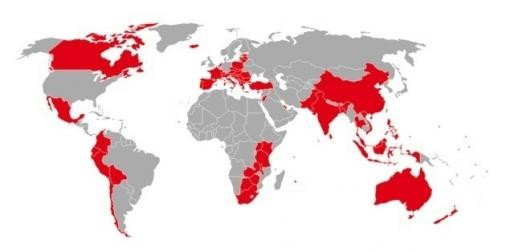

1

Tomáš Baťa se narodil 3. dubna 1876 ve Zlíně, tehdy malém, ale živém městečku na jihovýchodní Moravě, které mělo přibližně 3 000 obyvatel. Rodina Baťova měla hluboké kořeny v obuvnickém řemesle – tradice výroby obuvi sahala v jejich rodině až do 17. století. Jeho otec Antonín Baťa byl řemeslník a malý podnikatel, který vedl vlastní dílnu a vyráběl obuv ručně, jak bylo v té době běžné. Matka Anna, rozená Tomanová, pocházela ze staré zlínské rodiny a byla pro děti oporou i vzorem v domácnosti. Manželé Baťovi měli celkem dvanáct dětí, což bylo v té době běžné, ale jen pět z nich se dožilo dospělosti. Tomáš byl nejmladším přeživším synem a vyrůstal v poměrně skromných, ale pracovitých poměrech. Děti byly od malička zapojeny do práce v dílně – pomáhaly při přípravě kůží, šití obuvi nebo úklidu. Škola hrála v životě rodiny až druhotnou roli, důležitější bylo osvojit si řemeslo a naučit se zodpovědnosti. Tomáš ukončil školní docházku ve 14 letech, což nebylo neobvyklé, a nastoupil do učení v otcově dílně. Již v tomto období se projevovala jeho mimořádná inteligence, technické nadání a podnikavý duch. Rád přemýšlel nad zlepšováním práce a měl přirozený cit pro organizaci. Nezůstával však jen u tradiční výroby, ale zajímal se o novinky a vynálezy. Rád četl a snil o tom, že jednou pozná svět za hranicemi rodného Zlína.
2
V období dospívání se u Tomáše Bati začala stále více projevovat touha po nových zkušenostech a poznání. Bylo mu jasné, že pokud chce být úspěšným podnikatelem a zlepšit výrobu obuvi, musí se učit i mimo rodný Zlín. Proto se v roce 1892, v pouhých 16 letech, vydal na cestu do světa. První zastávkou byla Vídeň, tehdy hlavní město rakousko-uherské monarchie a jedno z kulturních a průmyslových center Evropy. Pracoval zde jako tovaryš v obuvnické dílně, kde se seznámil s modernějšími metodami výroby a organizací práce ve větším měřítku. Z Vídně se následně přesunul do Německa, kde navštívil více měst a pracoval v různých továrnách. Německo bylo tehdy na špici průmyslové výroby a právě zde získal Tomáš důležité zkušenosti – nejen řemeslné, ale i podnikatelské. Velký dojem na něj udělalo zejména systematické plánování, evidence práce, vedení účtů a disciplína provozů. Všímal si, jak důležitá je organizace celého podniku – od nákupu surovin přes výrobu až po distribuci výrobků. Získané poznatky si pečlivě zapisoval a analyzoval. Často přemýšlel, jak by podobné principy mohl aplikovat doma ve Zlíně. Bylo mu jasné, že tradiční ruční výroba obuvi, jakou provozoval jeho otec, nemůže dlouhodobě obstát v konkurenci levnějších a efektivnějších výrobních systémů. Již tehdy se v něm začala rodit myšlenka na průmyslovou výrobu obuvi. K přelomovému zlomu však došlo o něco později, když se k němu dostaly zprávy o pokroku ve Spojených státech amerických. Zejména ho oslovil způsob, jakým Henry Ford zaváděl pásovou výrobu automobilů. Fordův model sériové výroby, který umožňoval zlevnění výrobků a zpřístupnění běžným lidem, se stal pro Tomáše Baťu obrovskou inspirací. S nadšením sledoval, jak technologie, racionalizace a důsledné řízení procesů mohou změnit celý trh. Tento zážitek se mu hluboko vryl do paměti a později sehrál klíčovou roli při modernizaci výroby obuvi ve Zlíně. Už jako mladý muž tak Tomáš spojil praktickou řemeslnou dovednost se schopností strategicky přemýšlet, sledovat světové trendy a uvažovat v širších souvislostech. Právě tato kombinace z něj postupně formovala vizionáře a podnikatele nové generace.
3
V roce 1894, kdy bylo Tomáši Baťovi pouhých 18 let, založil se svým starším bratrem Antonínem a sestrou Annou malou rodinnou firmu nesoucí název T. & A. Baťa. Po smrti otce jim zbylo 800 zlatých, což nebyla nijak závratná suma, ale pro začátek postačila. Tuto částku vložili do podnikání jako základní kapitál. Firma sídlila v jednoduché dřevěné dílně na okraji Zlína a zaměstnávala jen několik pracovníků. První výrobky byly plátěné boty se spodkem z kůže, které se staly rychle oblíbené pro svou dostupnost a lehkost. Baťa byl hnací silou podniku – vyznačoval se neobyčejnou pílí, houževnatostí a ochotou učit se z chyb. V roce 1895, pouhý rok po založení firmy, postihla rodinu tragédie – bratr Antonín zemřel na tuberkulózu a sestra Anna se z podnikání stáhla. Tomáš tak zůstal na vedení firmy zcela sám, a to ve věku pouhých 19 let. I přesto, že neměl žádné formální vzdělání v oblasti řízení, převzal odpovědnost s odhodláním a začal krok za krokem budovat prosperující podnik. Do výroby zavedl pořádek, začal evidovat zakázky, pečlivě rozvrhoval práci a dbal na dodržování termínů. Již v roce 1897 se firmě podařilo stabilizovat výrobu a rozšířit sortiment o další typy obuvi, čímž si získala širší zákaznickou základnu.
4
Na přelomu 19. a 20. století čelila firma T. & A. Baťa několika vážným krizím. Hospodářské výkyvy, silná konkurence ze zahraničí i nedostatek pracovních sil a surovin ohrožovaly její existenci. Firma se dostala do finančních potíží a Tomáš musel přijmout radikální opatření. Rozhodl se vsadit na modernizaci výroby a přerod z tradiční řemeslné dílny na průmyslový podnik. Zásadním krokem bylo pořízení prvních obuvnických strojů z USA, které výrazně zrychlily a zlevnily výrobu. Tomáš pochopil, že uspěje jen tehdy, pokud nabídne kvalitní, ale levnou obuv širokým vrstvám obyvatelstva. Snížil ceny produktů až o polovinu oproti konkurenci – zatímco jiní nabízeli boty za 12 korun, Baťa je prodával za 8, a nakonec i za 6 korun. Tento krok způsobil zpočátku nedůvěru, ale brzy se ukázal jako geniální tah – zákazníci začali výrobky skupovat ve velkém. Aby zvýšil efektivitu, zavedl nové principy organizace práce, propagaci formou reklamních kampaní a vytvořil síť vlastních prodejen. Do popředí stavěl školení zaměstnanců a osobní motivaci. Vznikl tak základ unikátního systému, který později proslul jako Baťův systém řízení – podnikový model, jenž kombinoval efektivitu, sociální odpovědnost a důraz na výchovu pracovníků.
5
Vypuknutí první světové války v roce 1914 znamenalo zásadní obrat pro firmu Baťa. Zatímco mnoho podniků se potýkalo s poklesem poptávky a nedostatkem pracovní síly, Baťa dokázal využít situace ve svůj prospěch. Stal se klíčovým dodavatelem vojenské obuvi pro rakousko-uherskou armádu, což znamenalo stálé a rozsáhlé zakázky v době nejistoty. Výroba se rozrostla do bezprecedentních rozměrů – počet zaměstnanců stoupl z několika stovek na několik tisíc, a objem produkce se násobně zvýšil. Baťa reagoval rychle a flexibilně: zakoupil další stroje, najímal nové pracovníky a rozšiřoval výrobní kapacity. Zavedl třísměnný provoz, čímž zajistil nepřetržitou výrobu. I přes válečné podmínky se mu dařilo investovat do rozvoje – modernizoval dílny, rozšiřoval areál závodu, stavěl nové budovy a infrastrukturu. Ve Zlíně postupně vznikaly silnice, vlečky, vodovodní a kanalizační systémy i vlastní elektrárna. Baťa zároveň začal budovat vlastní firemní ekosystém – pod jednou střechou spojoval výrobu, logistiku, administrativu, obchod i služby. Po skončení války v roce 1918 se ukázalo, že firma nejen přežila, ale vyšla z konfliktu posílena a připravena na další expanzi. Zlín se proměnil z provinčního městečka v rozvíjející se průmyslové centrum s ambicemi přesahujícími hranice tehdejšího Československa.
6
V období mezi lety 1920–1932 vytvořil Tomáš Baťa unikátní systém řízení podniku, který neměl v Evropě obdoby a dodnes je považován za revoluční. Tento model, známý jako Baťův systém, v sobě spojoval efektivní management amerického typu s hlubokým sociálním cítěním a důrazem na morální hodnoty. Vycházel z přesvědčení, že firma má sloužit nejen zisku, ale také rozvoji jednotlivce a společnosti. Základní principy systému zahrnovaly:
7
Jedním z nejviditelnějších projevů Tomáše Bati jako průkopníka moderního podnikání bylo jeho systematické budování města Zlína. Věděl, že ke skutečnému rozvoji firmy je třeba vytvořit fungující a kulturní prostředí pro zaměstnance a jejich rodiny. Proto proměnil Zlín v jedinečný urbanistický experiment, který spojoval průmysl, bydlení, vzdělávání a volnočasové aktivity do jednoho celku. Ve 20. a 30. letech 20. století se Zlín stal živým důkazem jeho vize: byl vybudován podle zásad modernismu a funkcionalismu, přičemž hlavním architektem této proměny byl František Lydie Gahura, Baťův žák a spolupracovník. Klíčové bylo oddělení průmyslových zón od obytných, dostatek zeleně, promyšlená doprava a infrastruktura. Vznikly zde:
8
Navzdory svému vytížení byl Tomáš Baťa oddaný rodinnému životu. V roce 1912 se oženil s Marií Menčíkovou, dcerou významného politika a sestrou diplomata Jana Masaryka. Byla vzdělaná, kulturní a společensky aktivní, což doplňovalo Baťovu podnikatelskou osobnost. V roce 1914 se jim narodil syn Tomáš Baťa mladší, který se později stal klíčovým pokračovatelem otcovského odkazu ve světě. Baťa rodinný život nikdy neupřednostňoval před firmou, ale vždy se snažil vytvořit prostředí, v němž by rodina mohla fungovat jako zázemí i inspirace. Bydlel ve Zlíně ve vile, která byla skromná, praktická a bez zbytečného luxusu. Odmítal okázalost a dával přednost jednoduchosti – jezdil běžným vozem, nepořizoval si drahá umělecká díla ani sbírky. Tomáš Baťa vyznával protestantskou etiku práce a odpovědnosti. Byl přísný nejen na sebe, ale i na své nejbližší – syna vychovával ve skromnosti, disciplíně a povinnosti sloužit společnosti. Často zdůrazňoval, že bohatství je prostředkem, ne cílem, a že skutečná hodnota člověka spočívá v jeho činech a přínosu pro druhé. Rodina byla podle něj základem stability a morálky, a ačkoliv jí nemohl věnovat tolik času, jak by si přál, udržoval s ní hluboké pouto. Marie Baťová se po jeho smrti stala aktivní nositelkou jeho odkazu a významně přispěla k uchování Baťova jména i hodnot.
9
Tragédie, která zasáhla nejen Zlín, ale celé Československo, přišla nečekaně. Dne 12. července 1932 ráno odstartoval Tomáš Baťa spolu se svým pilotem Jindřichem Broučkem z nově vybudovaného letiště ve Zlíně–Otrokovicích. Cílem byla švýcarská Basilej, kde měl jednat o nákupu strojního zařízení pro svou továrnu. Let probíhal v obtížných podmínkách – nízká oblačnost, mlha a silný vítr komplikovaly orientaci. Krátce po startu se letadlo Junkers F 13 zřítilo poblíž železniční tratě. Havárii nikdo nepřežil. Vyšetřování potvrdilo, že šlo o kombinaci technické poruchy a špatné viditelnosti, které vedly ke ztrátě kontroly nad strojem. Zpráva o smrti Tomáše Bati se rozšířila rychlostí blesku – výroba ve Zlíně byla okamžitě zastavena, zaměstnanci spontánně vyvěsili černé prapory a město se ponořilo do hlubokého smutku. Pohřeb se konal s obrovskou účastí – přítomny byly tisíce lidí, státní představitelé, podnikatelé i zahraniční delegace. Tomáš Baťa byl pohřben na Lesním hřbitově ve Zlíně, a podle jeho vlastního přání měl náhrobek jednoduchý, bez zbytečné okázalosti. Jeho smrt byla nejen osobní ztrátou pro rodinu a spolupracovníky, ale také národní tragédií – odešel muž, který ztělesňoval moderní průmyslový pokrok, morální integritu a sociální odpovědnost. Zanechal po sobě nejen prosperující firmu, ale také vizi, která hluboce ovlivnila podnikání, vzdělávání i urbanismus nejen v tehdejším Československu, ale i ve světě.
10
Po smrti Tomáše Bati převzal vedení firmy jeho nevlastní bratr Jan Antonín Baťa (1898–1965), který měl silné organizační schopnosti a podnikatelskou odvahu. I když byl jiného temperamentu než Tomáš, dokázal navázat na jeho odkaz a dál rozvíjet Baťovu mezinárodní expanzi. V období mezi dvěma světovými válkami otevřela firma pobočky v desítkách zemí – od Evropy přes Asii až po Jižní Ameriku. Pod jeho vedením vznikaly tzv. Baťova města – samostatné průmyslové celky s vlastní infrastrukturou, školami, nemocnicemi a bydlením, např. Batanagar (Indie), Baťovany (dnes Partizánske), Batapur (Pákistán), East Tilbury (Anglie), Mogi das Cruzes (Brazílie). Firma vyvážela nejen boty, ale i Baťovu filozofii podnikání, kterou přizpůsobovala místním podmínkám.  Po druhé světové válce však přišel zásadní zlom. V roce 1945 byla firma v Československu znárodněna komunistickým režimem. Zlín přejmenován na Gottwaldov a značka Baťa byla zcela vymazána z veřejného prostoru. Rodina Baťů byla nucena odejít do exilu – Tomáš Baťa mladší se usadil v Kanadě a později ve Švýcarsku, odkud znovu vybudoval síť poboček a reorganizoval podnikání. Firma Baťa se pod vedením mladého Tomáše transformovala na moderní globální značku s tisíci prodejen ve více než 70 zemích. Zachovala si přitom klíčové hodnoty – kvalitu, dostupnost, péči o zaměstnance a etický přístup k podnikání. Tomáš Baťa mladší byl známý svou neokázalostí a úctou k otcově odkazu – stal se nejen úspěšným manažerem, ale i morální autoritou. Dnes je značka Baťa symbolem spolehlivosti, tradice a moderního podnikání a rodinný příběh Baťů je považován za jednu z nejvýznamnějších podnikatelských ság 20. století.
11
Dnes je Tomáš Baťa vnímán jako jedna z nejvýznamnějších postav české historie – nejen jako podnikatel, ale také jako vizionář, reformátor a humanista. Jeho přístup k řízení firmy, vztahu k zaměstnancům, výchově mládeže a budování společnosti výrazně předběhl svou dobu. I v 21. století zůstávají jeho myšlenky živé a inspirativní – často se o nich mluví v souvislosti s udržitelným podnikáním, sociální odpovědností firem či etickým kapitalismem. Značka Baťa nadále působí jako celosvětová firma s hlavním sídlem v Lausanne ve Švýcarsku a provozuje více než 5 000 prodejen ve více než 70 zemích světa. Vedle toho se Baťova filozofie promítá i do oblasti vzdělávání a urbanismu – v Česku nese jeho jméno řada škol, včetně Univerzity Tomáše Bati ve Zlíně, založené v roce 2001 jako centrum vzdělanosti a výzkumu, které navazuje na jeho ideály o propojení praxe, průmyslu a akademického světa. V samotném Zlíně, městě, které Tomáš Baťa proměnil z vesnice v moderní metropoli, najdeme mnoho památek na jeho éru: Baťův mrakodrap (budova č. 21), Baťovy domky, Baťovo muzeum, Památník Tomáše Bati (znovuotevřený v roce 2019 ve své původní funkcionalistické podobě) nebo Lesní hřbitov, kde je podnikatel pohřben. Architektura, kterou Baťa prosazoval, se stala ukázkovým příkladem funkcionalismu ve službách společnosti. Dědictví Tomáše Bati je však mnohem hlubší než jen obchodní značka. Jeho přístup k podnikání – kombinace efektivity, lidskosti, etiky a inovace – se stává inspirací i pro současné podnikatele, manažery a pedagogy. Často bývá označován za předchůdce moderních forem leadershipu a jeho myšlenky nacházejí místo v odborných studiích a diskusích o budoucnosti práce a podnikání. Po roce 1989 se Česká republika mohla znovu svobodně hlásit ke svým skutečným osobnostem. Město Zlín se v roce 1990 vrátilo ke svému původnímu jménu a opět se hrdě přihlásilo k odkazu Tomáše Bati. Dnes se v něm konají konference, výstavy a studentské projekty věnované jeho odkazu. Baťovo jméno se stalo symbolem pro zodpovědné podnikání, odvahu tvořit, službu společnosti a trvalý rozvoj.